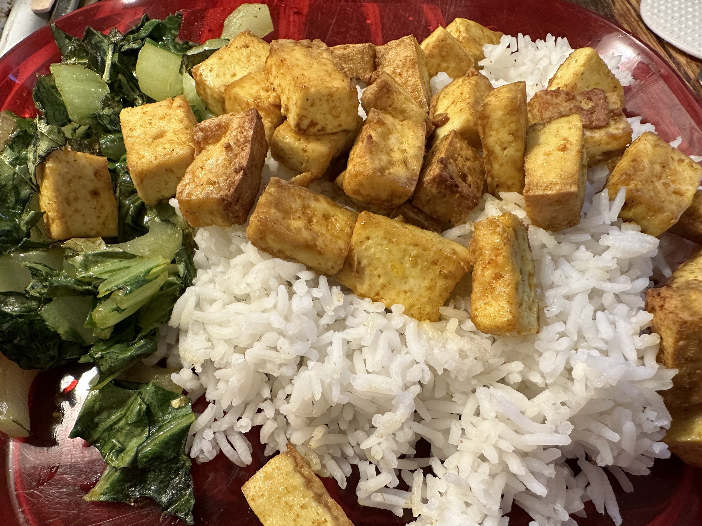

Spicy Crispy Tofu
Odin Recipes Homepage

This is a super simple recipe for my go to spicy tofu!
This recipe is very easy to make and doesn't take a lot of time, effort, or thinking.
I make it all the time as part of a simple dinner with rice and any sort of steamed, sauteed, or baked veggie. The actual work for it only takes a few minutes and
it is ready to plate or throw in a bowl after about 30 minutes — as long as you preheat the oven while getting the tofu ready.
Ingredients
- Extra Firm Tofu (the firmer the better!) — Fontaine Sante is great if you can find it.
- Extra Virgin Olive Oil
- Salt
- Sriracha Spice Mix
- Ground Ginger
- Paprika
Steps
- Gather all the ingredients
- Start preheating your oven to 450 fahrenheit.
- Measure one tablespoon of olive oil into a large bowl.
- Add half a teaspoon of salt.
- Add two teaspoons of Sriracha spice.
- Add two teaspoons of ground ginger.
- Add two teaspoons of paprika.
- Mix the oil and spices using a spoon.
- Open the tofu and rinse under cold water.
- On a clean cutting board chop the tofu into small cubes.
- Add the tofu to the oil and spice mix and stir until well coated.
- Put a sheet of parchment paper down on a baking tray and dump the tofu onto it.
- Put the baking tray into the oven and bake for 30 minutes.
- When done, take the tofu out and serve with rice and veggies. (I like to steam both in a rice cooker so it finishes around the same time as the tofu.)
Odin Recipes Homepage